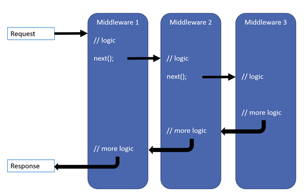

Middleware
During app start up, the WebApplication is used to configure individual middleware components that form a modular request processing pipeline.
Middleware is useful for defining functionality that should execute for every request and/or response. Some common examples include:
-
Serving static files
-
Output caching
-
Redirecting HTTP requests to HTTPS
-
Authentication
-
Routing a request to another component for processing
Each piece of middleware is responsible for passing the request on to the next piece of middleware in the pipeline. Middleware components are also given a chance to execute for every outgoing response. As an example, the caching middleware needs to check the cache for an incoming request but also needs to have the ability to insert a response into the cache before it is returned to the client.

[1]
Implicit Middleware
There are two pieces of middleware that the WebApplication implicitly adds to the pipeline: HostFiltering and ForwardedHeaders.
HostFiltering
Kestrel binds to one or more ports on the host OS. You can configure Kestrel to bind to a port with a specific IP address, or you can have Kestrel bind to a port for every IP address on the machine.
dotnet run --urls "http://192.168.1.105:5100"dotnet run --urls "http://*:5100"Kestrel itself does not care about the DNS hostname used to make the request. However, restricting the hostnames that an app responds to is recommended whenever you’re running in production for security reasons.
To filter out inappropriate hostnames, the HostFiltering middleware can be configured via the AllowedHosts app setting.
{
"AllowedHosts": "mysite.com;localhost"
}|
App settings are covered in another section. |
ForwardedHeaders
The ForwardedHeaders middleware is useful when running an ASP.NET Core app behind a proxy server or load balancer.
This middleware is able to read the X-Forwarded- HTTP headers and set the associated fields on the HttpContext.
Without the ForwardedHeaders middleware in place, a request property like RemoteIpAddress would provide the IP address of the load balancer rather than the IP address of the client that made the original request.
When using ASP.NET Core with IIS, the ForwaredHeaders middleware is enabled automatically. For other scenarios, the middleware must be explicitly configured and enabled.
builder.Services.Configure<ForwardedHeadersOptions>(options =>
{
options.ForwardedHeaders =
ForwardedHeaders.XForwardedFor |
ForwardedHeaders.XForwardedProto;
});app.UseForwardedHeaders();|
Refer to the documentation for more information about how to configure ASP.NET Core to work with proxy servers and load balancers. |
Terminal Middleware
Sometimes, a piece of middleware may decide to "short-circuit" the pipeline. For example, if the HttpsRedirection middleware sees that an incoming request was sent via HTTP, there is no need to go any further - execution of the pipeline should stop and a redirection response should be sent to the client. When middleware behaves in this way, it is referred to as terminal middleware.
The simplest type of terminal middleware is a request delegate that handles all requests. This can be configured by using an overload of the WebApplication’s Run method.
|
There are many more features that we will add to the app through the use of middleware. |